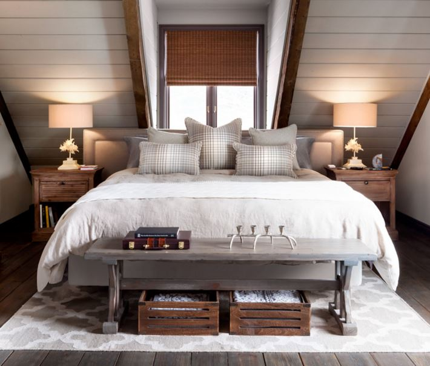
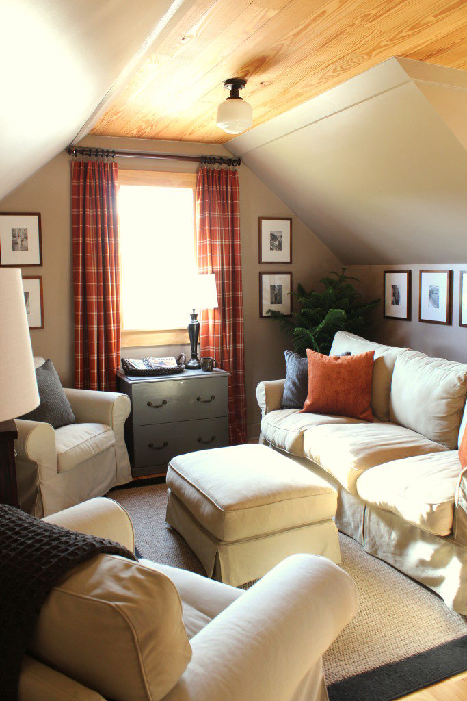
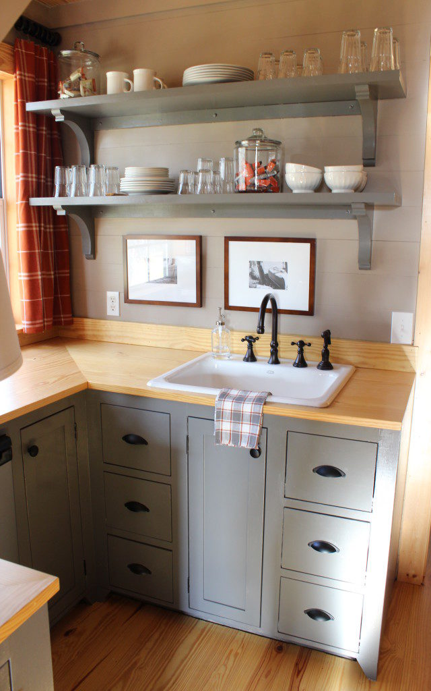

.png)
.PNG)
.PNG)
.PNG)
.PNG)
.PNG)
.JPG)
.JPG)
.PNG)
.PNG)


source
Welcome back for another post to dream about a possible future lake house! Â My ideas for version #1 were light, bright, and colorful, with a bit of nostalgia thrown in, and today we finish up our dreaming with version #2. Â I am sure that you are going to think that I have gone over to the dark side…and I am betting many of you are probably thinking This is not Kelly’s style. Â Well…with a new house, comes the opportunity to make a change in style, so I am thinking about whether or not I want to go in a different direction.

If you have been following here for awhile, you are probably wondering Why is she putting a photo of her husband’s office in this post?  You see, I was sitting up there the other morning, just enjoying a cup of coffee, when all of a sudden it hit me.  This is exactly what our lake house should look like…warm…cozy…a bit rustic.
source
And the more I sat there and looked around the room, the more I thought it was perfect for the lake house. Â So I again went to Pinterest to look for inspirational images – but this time I wanted photos that might have the same vibe as that room. Specifically, I wanted rooms with wood floors, wood ceilings, shiplap walls, and color schemes that would work with rust and gray – perhaps navy, mustard, and olive.
So here are the ones that I came up with. Â They aren’t exactly like that room, but I think they have the feel that I am going for, and perhaps they will be of help in the future if we have the opportunity to build this dream lake house.
Let’s start with a couple of kitchens. Â I keep coming back to this one for some reason, although I don’t know if I would be brave enough to paint our cabinets green.

Here is another one with a rustic ceiling, but it is actually just painted to look like old boards. An amazing job, right?
I would want shiplap walls painted a dark khaki if I had this room.
The following kitchen is from a tiny house, which is why we are seeing the washer in the kitchen. Â In a larger home, that space would be for a dishwasher.
If I were to change the fabric in the shades of the following kitchen to a dark plaid – maybe rust or navy, it would be a wonderful one for our lake house.
Now moving on to a living area. Â I liked this one, but I would want plank walls rather than stone.
This is the dining area in that same house. Â I like how cozy it looks, but I do not know how practical it would be for us to have built-in seating all the way around. Â It looks very comfortable, but I would hate to try to keep all those cushions clean.
And now for a few bedrooms (besides the one at the top of the post.) Â There were quite a few of them that I thought were a good fit for the look.
And RHTeen has a great selection of linens that could work for this house.
I really like this plaid!
There was one bathroom that I ran across that seemed to have the style I was looking for (and it happens to be in the house with the bedroom at the top of the post. 🙂 )  Aren’t those lights great?!
And finally, I found another house plan that I’d like you to see. Â Archiscapes designs homes that have beautiful architectural details. Â The one that seems to best fit our needs is called The Sea Nest.
I would want to paint it a much darker color – perhaps like the color scheme on this house (which is not the Sea Nest.)
Here is the floorplan for The Sea Nest. It is larger than we need, so it would have to have some of its square footage trimmed off – but that would not be hard to do because the rooms on the website look quite generous in size to me.
There is actually a smaller version of the plan on their website, but it has a garage in place of the separate dining area. Â We would not need a garage, and I really like the design of that dining room in the plan with all those windows. So I prefer this one over it.
And that brings us to the close of our lake house dreaming for awhile.  Thank you so much for following along with me as I have thought about possibilities for that house…a house that may or may not be built…but it is always fun to dream. 🙂
Until next time…


.PNG)
I love the look of this version. And the Sea Nest is adorable. I’d love a dining area with windows wrapped on two sides.
——————————————————————–
I am sold on that dining room too! Can you ever have too many windows? 🙂 And I am glad you like the houseplan Carolyn.
Kelly
I really like this version and the rooms with the wood. Amazing ceiling painted like wood and the bathroom lights, too. Different! The green cabinets I think would be great combined with nature and the setting for a cabin. I love the look of the house as well, but not sure what color. Just me talking, hope you find the right one. No harm in dreaming, right?! 🙂
——————————————————————-
Thank you for your input on the choices Karen. 🙂 Who knows if we will ever get to make this dream house a reality, but you are so right. There is no harm in dreaming. Thanks for dreaming right along with me! 🙂
Kelly
Hi Kelly:
Wow; that is a hard choice! There are ideas in both versions that I really like. I know that no matter what choice you go with, or a combination of both, your home will be beautiful and a reflection of you and your family.
Cindy
——————————————————————–
Thank you for your kind comment Cindy. You are so sweet to say all that. I hope that we do get to build this dream house one day and truly make it a reflection of our family.
Kelly
Hi Kelly. What a dilemma, both versions have beautiful qualities but personally I prefer more of this look, it’s cosy and warm. The living room and the dining room are beautiful perfect! How much fun it is following you as you plan your new home. So hope your dreams come true!
——————————————————————–
Thank you Tricia. I do like the warmth of this one with the wood too…but ask me in the heat of the summer, and I just might change my tune. LOL
I hope we can make this dream come true too.
Kelly
Oh heavens, the picture of the kitchen and family room (the one after the green cabinets) has always been a favorite of mine….and the house that goes with it. As for the green cabinets, its only paint….try it you might just like it.
Love dreaming with you!
Jeanne
———————————————————————-
I love that Georgia house too, Jeanne. It is a beautiful restoration! Thank you for the vote for bravery with the green paint. When we get around to actually building this house perhaps I will have the courage. 🙂
Kelly
Kelly, just remember that your children will probably come home for holidays in a few years with families of their own and those future grandbabies in tow. You will need more space than you think. We live full time on a lake/River and built William Pool’s Port Royal plan. You might want to check it out.
———————————————————————-
Linda, I hope you are right about the grandchildren, but the way it is looking right now, we will be waiting a verrrrry long time before we have very many. I love your house plan! I will have to study it in more detail later, but it looks like a really great one. 🙂 Thanks for the information on it.
Kelly
I love your present house, Kelly. If you come up with a lake house, it will be wonderful too. I don’t know if you have ever answered this question: Does your husband agree with all your ideas, and do what you want him to do? Or does he have his own opinion?
Growing up we had a summer lake house. There’s nothing like it!
——————————————————————-
Thank you for the vote of confidence Gail! And yes, my husband often has an opinion on what should be done, but it usually meshes with what I want to do. 🙂 In this case, he will like version 2 because it has rustic wood in it. The only place we ever disagree is with wood. Like most men, he wants it left unpainted and I often want to paint it.
Lucky you to have grown up spending summers at a lake house! Wish we could have had it years ago for our children.
Kelly
I am surprised at how many readers like version #2 better. I love version 1. This interior is pretty but I like the first one so much better. It seems lighter, brighter and happier to me. But, whichever one you do will be spectacular, I am sure.
———————————————————————-
I am VERY surprised Kathy! I just knew everyone would be like you and say they liked the 1st one – and for all the reasons you named. 🙂 Must be the fall season making everyone gravitate to the more cozy look. LOL
Kelly
I love this version too!! There are so many beautiful styles I like. Haha, wish we could have a space for all of them. 😉 I have loved the gray/rust color scheme since you shared your husband’s office space room last year. I especially love the rustic wood in this version too. I have a stack of 100+ year old wood now from my husband’s grandparent’s old homeplace which was torn down last year. Still trying to decide what to use it for. 🙂 I like the new house plan too. It is so fun to dream!! 🙂
——————————————————————–
Thank you Gina. I am right there with you on liking a bunch of different styles! How wonderful to have all those old boards! I hope you come up with a good use for them. They are a treasure! 🙂
Kelly
Kelly,
Not that you’ve asked for us to vote but I vote for version 2. I love the rustic touches and of course, I love the use of a bit of plaid.
Its so much fun to dream and I really like the floor plan…hope you find a lot to build this, we’d all enjoy trailing along on this journey. 🙂
xo,
Karen
——————————————————————–
Karen, it is a good thing that I am not a betting woman! I would have thought that everyone would have disliked this style. Wow! Glad you liked it, and yes, the rustic touches and the plaid are pretty. I hope we find a waterfront lot too. 🙂
Kelly
Love your ideas, and the color scheme you are considering. I wanted gray cabinets, but a warm gray, not the cool gray we were offered. So I went with creamy white in the kitchen, but the master has linen cabinets, the guest bath stained dark wood.
Not a fan of built in dining, just too hard to get in to the far side of seating.
Love that plaid, and that pumpkin accent color is my new favorite color. Funny, I had that back in the 70’s, when we were first married, and am coming back to it again! But it goes with so much of what we already have, so I don’t have to totally redo everything!
We are all moved in at the lake, packing is done (less than a week!) and just window treatments remain. No hurry on that, since the other houses are across the lake! Can’t tell you how serene and quiet it is. Except for morning band practice on the high school field nearby, but I always love a good marching band! 😉
I so hope your dream becomes real.
——————————————————————
Hooray to your moving in! All in a week? THAT is amazing! 🙂 Glad you liked all the ideas Marianne, and it seems that popular decorating colors come back around from time to time. Take your time with the window treatments so that you know exactly what you want.
I know you are enjoying your new home!! (jealous here. 🙂 )
Kelly
I pick version 2, it seems so much more comfortable, less, I don’t know, “stimulating” maybe, more everyday. Much easier to add pops of color and seasonal decor if you choose. You’ve got great ideas and a magic touch, I can’t wait to see how you pull things together, even if it’s only in your dreams!
——————————————————————-
It is certainly a more “calm” look for a lake house, so you are right about it being less stimulating than the other look. Thank you for the compliments, Linda and I hope it is a project we get to pursue.
Kelly
Well, I actually love this version more than the first one believe it or not I think it is more you than the first one!!
I always loved the office over the garage anyway. It is funny …as I am looking at this I think much of it looks similar to the spaces you saw on vacation out in Seattle. Did you get inspired or what?!!! It would be nice living on a lake, but you know all your readers love love love your home now.
It is funny, I have started my third fall this year being retired as a teacher. It really just this year seems right. The first year I was in a fog from losing a parent, the second year moving the other one to FWB. She has her own place, but still I am busy taking care of things. The first two years were just hard trying to find my place after working so hard for 31 years. It felt like I should be doing more even though I had so much that I had let go and it had to be taken care of. Quite frankly just finding a routine for myself was very hard. I am finally letting myself relax.
It might be just possible you are still in that mixed up land between work and retirement and finding your place whether it is a lake home or just staying put where you are.
——————————————————————-
Really. more me? Wow! Guess I don’t recognize my own style! (If there is such a thing. LOL) And yes, I was inspired in Seattle…more than you know. We just spent a week there redoing our son’s apartment – and guess what. It is in gray and rust! Ha! His style is more modern – which is expected with someone in their twenties.
I am so glad your retirement is going well for you, and I hope you are right about year #3. In year 2 here and I don’t feel I have really “figured it out” yet. Waaaaaay too busy – which means it is nothing like I thought it would be. The first year I dove into blogging big time, and when my husband retired last year it seemed his schedule has dictated mine much more than I thought it would. We are traveling so much now that it still has not slowed down. So I think you are right about my being in the mixed up land between work and retirement. Perhaps you should be a therapist, Sandy! 🙂 🙂
Thanks a million for your comment girl.
Kelly
I’m hoping your dream comes true! Like you, I love to have something to plan/redecorate. Your idea to only have a few upper cabinets in the kitchen is a good one, the kitchen on the lake should have wonderful views with plenty of windows! I can already smell the fresh air!
——————————————————————–
I hope it comes true too Bobbie. 🙂 It would be a change to have few upper cabinets for me…not sure where I would hide all “the stuff.” LOL I love love love windows, and you are right about a lake house having wonderful views. That is what is driving me to look for plans that have the living room at the back of the house so that it has water views. Not easy to find plans with that!
Kelly
Hi Kelly, I’ve been meaning to ask you … how are you enjoying retirement? I hope you’re over the moon about it like I was! And still am, 7 years later. It gives you time to do the creative play (and work) that is so satisfying in life. I love the direction you are going in. I’ve had those decorating epiphanies in my own home. Isn’t it wonderful to know where you’re headed and explore the ideas that follow? Thanks for taking us along. Your blog is still one of my favorites.
———————————————————————-
Thank you so much for your sweet words Anne. Retirement has become something different from what I thought it would be. In my head I pictured slow days with time for leisurely reading novels or working in the yard. Lately it has been travel travel travel with barely enough time to get laundry done before we pack to take another trip. I am hoping that it slooooows down after this month, and we can actually enjoy it. Thank you for asking. 🙂
Kelly
I like these! I also like the new plan with the nice dining room. Have to think about family being home over the holidays!
——————————————————————-
Thanks Vicki! It is a departure from all my red and black for sure. That dining room is wonderful, isn’t it?!
Kelly
I think this is a perfect look for a lake house. I have dreamed of a house by some type of water and this is what I vision. Cozy, homey and it is really not that dark. You can have this look and still keep it light.
———————————————————————–
I’m so glad you like it Linda. It really does seem suited to a house on a lake to me, and like you, I love the cozy feel of it.
Thanks for taking the time to read the post and leave your comments here today. 🙂
Kelly
Hi Kelly,
I love all the photos in this post. They really look like you and your home. They are warm and welcoming. You are right, it is fun to dream!
——————————————————————–
Aw you are sweet Gabrielle. 🙂 I hope we get to turn this dream into a reality sometime in our future. Thanks for following along with us!
Kelly
I love the idea of a lake house! I also love the rooms you showed. In some ways, it seems you might like a combination of lake house with a touch of industrial, a look I like also. Just a thought.
—————————————————————–
Nancy, I think you nailed it. 🙂 When I was searching on Pinterest, I kept putting in “rustic industrial rooms.” So yes, I do like a touch of industrial in this style. (Perhaps my boys are rubbing off on me!)
Kelly
Love these photos!
I’m with you on the built in seats. They look marvelous, but if I’m the one stuck on the inner portion, I feel trapped. I start shaking, sweating (well, okay, I don’t really sweat), but I get really nervous. I always think if I have to leave, I’ll have to slink down underneath the table and crawl out.
But hey, that’s just me.
—————————————————————-
I think you need some therapy Leslie Anne! LOL No,seriously I do know what you mean. I don’t feel trapped and nervous, but it is certainly inconvenient to be stuck in the middle in one of those seating arrangements. I would like that dining room with all those windows to have a nice big round table with chairs surrounding it. Then anyone could escape any time they felt the need. 🙂
Kelly